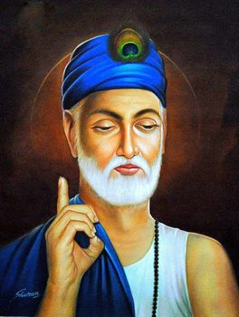

संत कबीर साहेब
Kabir Saheb
Freedom is primary—freedom from the ego. The centre of action is intent, and intent is all that matters.
— Acharya Prashant
search doha by keyword
Press the button to draw a doha.
previously drawn
Your last 5 dohas will appear here — click any to revisit it.